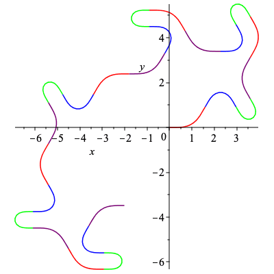
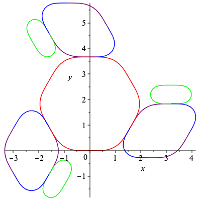
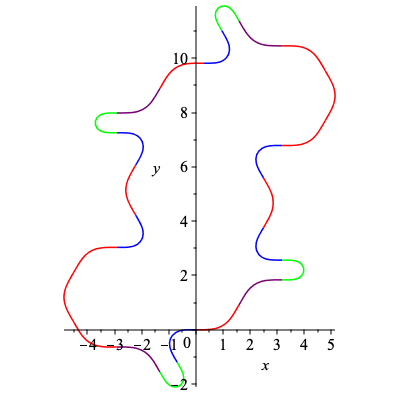
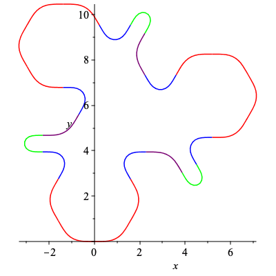

C infinity curves
Set Up
A procedure used several times that returns an approximation of a curve with curvature k using h points.
| > | CurveApprox := proc(k,h,a,b)
description "input curvature of a curve - k; number of partitions in the approximation - h; and starting / ending points - a, b; outputs (h+1)x2 array giving x and y components of original curve"; local i, d, Kt, C; d := (b-a)/h; Kt := Array(1..h+1); C := Array(1..h+1,1..2); Kt[1] := 0; C[1,1] := 0; C[1,2] := 0; for i from 2 to h+1 do; Kt[i] := Kt[i-1] + d/2 * (evalf(eval(k,s=d*(i-2)+a)) + evalf(eval(k,s=d*(i-1)+a))); C[i,1] := C[i-1,1] + d/2 * (evalf(cos(Kt[i-1])) + evalf(cos(Kt[i]))); C[i,2] := C[i-1,2] + d/2 * (evalf(sin(Kt[i-1])) + evalf(sin(Kt[i]))); end do; return C; end proc: |
The following procedure generates a curvature and curve of length 48 using a list of letters representing the minimal period of a word on the graph examined in section 5. These curves are generated so that the sections with the same image under the signature map have the same color.
| > | SmoothCurve := proc(L)
description "input list L to return curvature and plot of smooth curve with that curvature"; local g, h, f, k_b, k, C, ell, i, C1, col; col := table([1="red",-1="purple",3="green",-2="blue"]): #change red back to purple h := (r_1,r_2) -> exp(-1/(r_1-t))/(exp(-1/(r_1-t))+exp(-1/(t-r_2))): g := (r_1,r_2) -> -exp(-1/(r_1-t))/(exp(-1/(r_1-t))+exp(-1/(t-r_2)))+1: f := (r_1,r_2) -> piecewise(t<=r_1,0, t<(r_1+r_2)/2, g(r_1,(r_1+r_2)/2), t=(r_1+r_2)/2, 1, t<r_2, h((r_1+r_2)/2,r_2),0): ell:=nops(L); k_b:=0; for i from 1 to ell do k_b:=k_b+L[i]*Pi/3*f(2*(i-1),2*i); end do; k := eval(k_b,t=s-ell*2*floor(s/(ell*2))); C1 := CurveApprox(k,312,0,48); C := [seq(plot(C1(1+13*i..1+13*(i+1),1),C1(1+13*i..1+13*(i+1),2), color=col[L[(i mod ell)+1]],scaling="constrained",labels=[x,y]),i=0..23)]; return C, k; end proc: a:=-2:b:=-1:c:=1:d:=3: |
Section 4 curves
We obtain 2 non-congruent curves using the minimal peroid of their words. Since an admissible word will have 48 letters we can see that C1 and C2 will give a curve with symmetry index 6, while C3 will have symmetry index 3, and C4 will have symmetry index 2.
| > | C1, k1 := SmoothCurve([c,a,d,b]):
plots[display](C1); |
 |
| > | C2, k2 := SmoothCurve([c,d,a,b]):
plots[display](C2); |
| > | C3, k3 := SmoothCurve([c,a,d,b,c,d,a,b]):
plots[display](C3); |
| > | C4, k4 := SmoothCurve([c,a,d,b,c,d,a,b,c,a,d,b]):
plots[display](C4); |
Curvatures κ and κ
Here we show the curvature functions for C1 and C2 as described in section 4.
| > | plots[display](Array([
plot([[s,k1,s=0..2],[s,k1,s=2..4],[s,k1,s=4..6],[s,k1,s=6..8]],color=["red","blue","green","purple"]), plot([[s,k2,s=0..2],[s,k2,s=2..4],[s,k2,s=4..6],[s,k2,s=6..8]],color=["red","green","blue","purple"]) ])); |
|
The signature for the curves above here is obtained from κ
| > | Asig := plot([[k1,diff(k1,s),s=0..2],[k1,diff(k1,s),s=2..4],[k1,diff(k1,s),s=4..6],[k1,diff(k1,s),s=6..8]],
color=["red","blue","green","purple"]): Alabel1 := plots[textplot]([1.4,-.4,kappa(s)]): Alabel2 := plots[textplot]([-.5,5,diff(kappa(s),s)]): plots[display]({Asig,Alabel1,Alabel2}); |
Section 5 Curves
Since admissible words on the signature graph have length 24 we can see that the word below is admissible while not periodic.
| > | C5,k5 := SmoothCurve([c,a,d,b,c,d,a,b,c,d,a,b,c,a,d,b,c,a,d,b,c,d,a,b]):
plots[display](C5); |
|  |
Though while a periodic admissible word will induce a closed curve, the curve is not guarunteed simple.
| > | C6,k6 := SmoothCurve([c,a,b,d,c,d,a,b,c,a,b,d]):
plots[display](C6); |
There are many admissible words that induce non-congruent closed curves, the following are just a few examples.
| > | C7,k7 := SmoothCurve([c,a,b,d]):
plots[display](C7); |
| > | C8,k8 := SmoothCurve([c,b,d,a,d,b,a,c]):
plots[display](C8); |
 |
| > | C9,k9 := SmoothCurve([c,b,d,a,c,b,a,d,c,a,b,d]):
plots[display](C9); |
| > | C10,k10 := SmoothCurve([c,b,d,a,a,d,b,c]):
plots[display](C10); |
| > | C11,k11 := SmoothCurve([c,b,d,a,c,d,b,a,c,b,d,a]):
plots[display](C11); |
| > | C12,k12 := SmoothCurve([c,b,d,d,a,b,a,c]):
plots[display](C12); |
|  |
The following closed curves are induced from non-admissible words. As a result, the signature index for these curves are different from the rest of the curves in this section. Respectively, the signature index for the curves are 4, 3, 2, and 3.
| > | C13,k13 := SmoothCurve([c,b,d,a,c,a,c,c,c,b,d,a]):
plots[display](C13); |
|  |
| > | C14,k14 := SmoothCurve([c,b,d,a,c,a,c,c]):
plots[display](C14); |
| > | C15,k15 := SmoothCurve([c,a,c,c,c,b,d,a,c,a,c,c]):
plots[display](C15); |
| > | C16,k16 := SmoothCurve([c,c,a,b,d,a,c,c]):
plots[display](C16); |
|  |